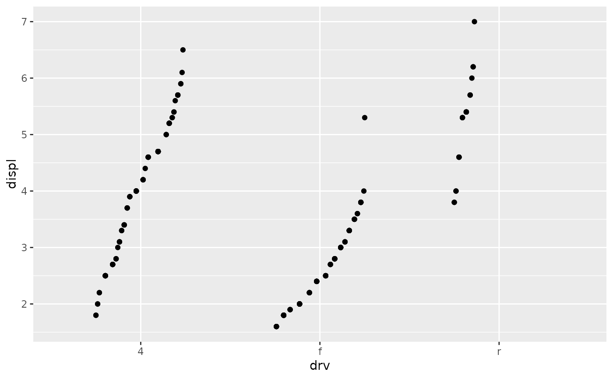

All position_*() functions (like position_dodge()) return a
Position* object (like PositionDodge). The Position*
object is responsible for adjusting the position of overlapping geoms.
Details
The way that the position_* functions work is slightly different from
the geom_* and stat_* functions, because a position_*
function actually "instantiates" the Position* object by creating a
descendant, and returns that. The object is chaperoned by the Layer class.
To create a new type of Position object, you typically will want to override one or more of the following:
The
required_aesanddefault_aesfields.The
setup_params()andsetup_data()methods.One of the
compute_layer()orcompute_panel()methods.
Fields
required_aesA character vector naming aesthetics that are necessary to compute the position adjustment.
default_aesA mapping of default values for aesthetics.
use_defaultsDescription
A function method for completing the layer data by filling in default position aesthetics that are not present. These can come from two sources: either from the layer parameters as static, unmapped aesthetics or from the
default_aesfield.Usage
Position$use_defaults(data, params)Arguments
dataA data frame of the layer's data
paramsA list of fixed aesthetic parameters
Value
A data frame with completed layer data
setup_paramsDescription
A function method for modifying or checking the parameters based on the data. The default method returns an empty list.
Usage
Position$setup_params(data)Arguments
dataA data frame with the layer's data.
Value
A list of parameters
setup_dataDescription
A function method for modifying or checking the data. The default method checks for the presence of required aesthetics.
Usage
Position$setup_data(data, params)Arguments
dataA data frame with the layer's data.
paramsA list of parameters coming from the
setup_params()method
Value
A data frame with layer data
compute_layerDescription
A function method orchestrating the position adjust of the entire layer. The default method splits the data and passes on adjustment tasks to the panel-level
compute_panel(). In addition, it finds the correct scales in the layout object to pass to the panel computation.Usage
Position$compute_layer(data, params, layout)Arguments
dataA data frame with the layer's data.
paramsA list of parameters coming from the
setup_params()methodlayoutA
<Layout>ggproto object.
Value
A data frame with layer data
compute_panelDescription
A function method executing the position adjustment at the panel level. The default method is not implemented.
Usage
Position$compute_panel(data, params, scales)Arguments
dataA data frame with the layer's data.
paramsA list of parameters coming from the
setup_params()methodscalesA list of pre-trained
xandyscales. Note that the position scales are not finalised at this point and reflect the initial data range before computing stats.
Value
A data frame with layer data
aestheticsDescription
A function method for listing out custom position aesthetics for this position adjustment.
Usage
Position$aesthetics()Value
A character vector of aesthetic names.
Convention
The object name that a new class is assigned to is typically the same as the
class name. Position class name are in UpperCamelCase and start with the
Position* prefix, like PositionNew.
A constructor functions is usually paired with a Position class. The
constructor copies the position class and populates parameters. The
constructor function name is formatted by taking the Position class name and
formatting it with snake_case, so that PositionNew becomes position_new().
See also
The new positions section of the online ggplot2 book.
Other Layer components:
Geom,
Layer-class,
Stat
Examples
# Extending the class
PositionRank <- ggproto(
"PositionRank", Position,
# Fields
required_aes = c("x", "y"),
# Methods
setup_params = function(self, data) list(width = self$width),
compute_panel = function(data, params, scales) {
width <- params$width
if (is.null(width)) {
width <- resolution(data$x, zero = FALSE, TRUE) * 0.4
}
rank <- stats::ave(data$y, data$group, FUN = rank)
rank <- scales::rescale(rank, to = c(-width, width) / 2)
data$x <- data$x + rank
data
}
)
# Building a constructor
position_rank <- function(width = NULL) {
ggproto(NULL, PositionRank, width = width)
}
# Use new position in plot
ggplot(mpg, aes(drv, displ)) +
geom_point(position = position_rank(width = 0.5))
